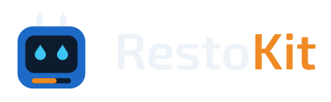
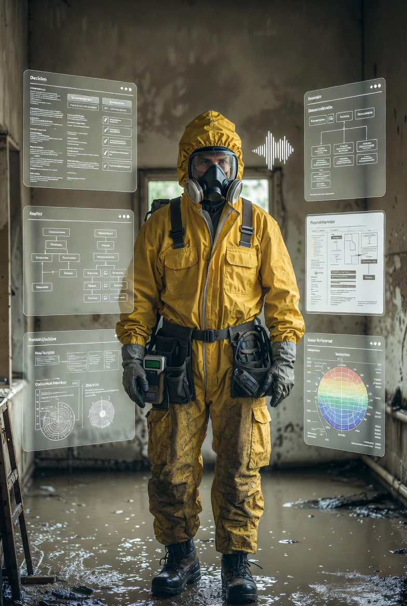

Kit 0.9.15

A restoration kit for water, mold, and crawlspace work.
From tech to lead, PM, and estimator.
Runs on: commercial models only, loaded into the Grok app or a Grok Bot.

How it changes the day
- Edge cases stay in the kit. The rare ones don’t come up often enough to stay top of mind. You carry less of that inventory in your head.
- The claim trail rides with the work. Photos, moisture, why the equipment is there and where it sits, and a short note happen on the stop.
- One question at a time. The answer is short and specific, the way a senior tech talks the job through.
What it is
RestoKit is a structured JSON kit for anyone running a restoration job. It’s grounded in IICRC S500 (water) and S520 (mold) principles, and written the way a senior tech talks a job through.
It doesn’t replace years on the job. It carries lessons from people who’ve spent decades in the trade. Its main job is memory: the rare edge cases that don’t come up often enough to stay top of mind.
Who it’s for
- Tech The job flow in order, with safety checks called out when they matter: category, electrical, crawlspace gas.
- Lead Containment, negative air, equipment sizing, and crew and labor calls.
- PM Hold status, work authorization, daily drying readings, and verification before teardown.
- Estimator The Phase 0 survey and scope, remove-vs-dry and category calls, plus documentation that backs up the scope.
How it works
-
Load it
Attach
resto_kit_0.9.15.jsonin the Grok app or add it to a Grok Bot’s knowledge. Nothing to install. -
Tell it the job
For example: “Category 2 supply-line leak, kitchen and crawlspace, 1990s house, I’m the PM.”
-
Ask one thing at a time
“Remove or dry this LVP?” “Is the subfloor dry?”
-
Get a field-ready answer
Short and specific, grounded in IICRC S500 and S520 principles. Deeper detail only when you ask.
What’s inside
- Five gated phases From Survey & Estimate to Closeout, so safety steps don’t get skipped. Hold is a status a job can enter from any phase.
- Modules Category, remove vs. dry, containment, negative air, equipment sizing, mold, crawlspaces, hazard sampling, and more.
- Base science RH, temperature, GPP, vapor drive, wicking, material behavior, dry standards.
- Field lessons From daily job logs, added only once they prove out on real jobs.
Status
Kit version 0.9.15
- 0.9.15. Morning into-file notes are delta-only: decisions, today’s work, and who’s assigned. Not a reprint of data already in the file.
- 0.9.14. File review runs before the day-forward plan. To-dos come back role-sorted: PM, then Lead, then Techs.
- Earlier 0.9.x still in the kit: crawl underside checks when wet rooms sit over a crawl, a visit-note cadence, photo timing (prep from approach photos; leave notes wait until uploads), and short notes with a line break between sections. Day-forward plans and spider-box defaults remain.
- The full kit is private. It’s developed in a private repo. The public repo shows what it covers and how it’s laid out.
- Next. The kit stays a field memory and voice guide, and keeps growing the documentation habits that fill the claim trail every stop. Longer-term still includes lining field scope up with estimating.
- For shops. Demo on request. I can build a company version around a shop’s own procedures.
Links
- Public repo github.com/neuresthetics/resto_kit_public
- Request a demo neuresthetics@gmail.com
- GitHub github.com/neuresthetics